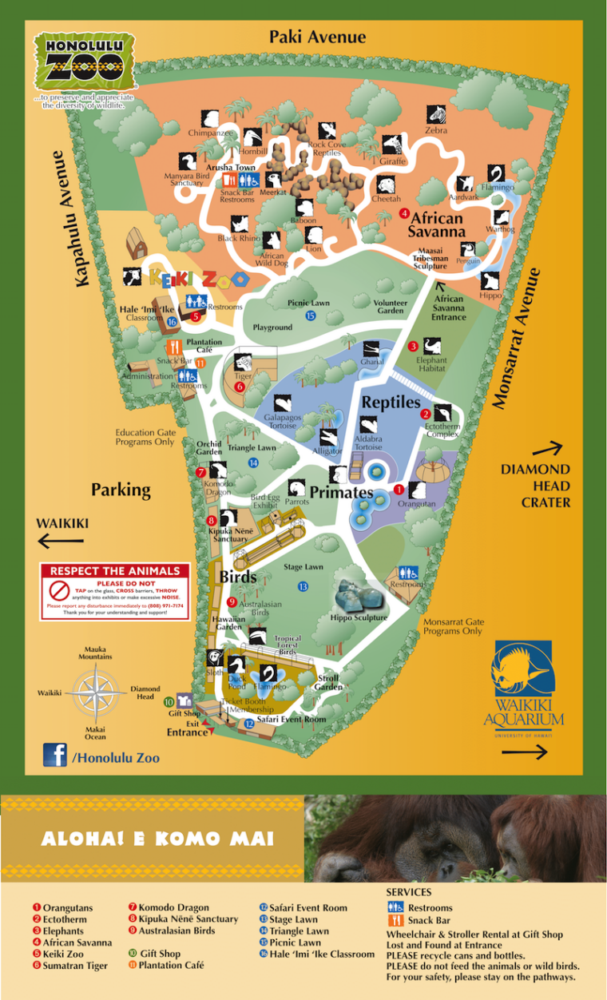
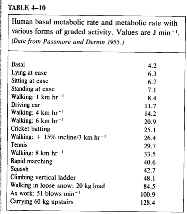

Lab 2: Zoo
Bring with you:
- Your lab notebook
- A timing device (e.g. your phone)
- Sun screen, hat, and sunglasses. It will - Read the Hlimoneko Paper.
Your task this week is to construct an energy budget for an animal of your choice, very similar to modeling the metabolism of your fossil. Each group will choose a different zoo animal (Letʻs try to spread the groups across the large /small, herbivore/predator combinations).

Observe Animals
First, walk around the zoo, find at least one animal in each of these following categories and name it in a table such as the one below (do your best with the amphibians, as the zoo does not have a large collection):
| Order | Animal (Genus species and common name) | Diet | Size | Thermo |
|---|---|---|---|---|
| Mammal | herbivore | small | sun-loving | |
| Mammal | herbivore | small | shade/nocturnal | |
| Mammal | herbivore | large | sun-loving | |
| Mammal | herbivore | large | shade/nocturnal | |
| Mammal | predator | small | sun-loving | |
| Mammal | predator | small | shade/nocturnal | |
| Mammal | predator | large | sun-loving | |
| Mammal | predator | large | shade/nocturnal | |
| Bird | herbivore | small | sun-loving | |
| Bird | herbivore | small | shade/nocturnal | |
| Bird | herbivore | large | sun-loving | |
| Bird | herbivore | large | shade/nocturnal | |
| Bird | predator | small | sun-loving | |
| Bird | predator | small | shade/nocturnal | |
| Bird | predator | large | sun-loving | |
| Bird | predator | large | shade/nocturnal | |
| Reptile | herbivore | small | sun-loving | |
| Reptile | herbivore | small | shade/nocturnal | |
| Reptile | herbivore | large | sun-loving | |
| Reptile | herbivore | large | shade/nocturnal | |
| Reptile | predator | small | sun-loving | |
| Reptile | predator | small | shade/nocturnal | |
| Reptile | predator | large | sun-loving | |
| Reptile | predator | large | shade/nocturnal | |
| Amphibian | herbivore | small | sun-loving | |
| Amphibian | herbivore | small | shade/nocturnal | |
| Amphibian | herbivore | large | sun-loving | |
| Amphibian | herbivore | large | shade/nocturnal | |
| Amphibian | predator | small | sun-loving | |
| Amphibian | predator | small | shade/nocturnal | |
| Amphibian | predator | large | sun-loving | |
| Amphibian | predator | large | shade/nocturnal |
Focal Observation
As a group choose an animal to observe.
Collect Data:
Mass: Approximate the dimensions of your animal. Approximate the volume of your animal, by whatever geometric approximation seems reasonable to you. Animals are ~70% water. Estimate mass from the density of water (1g/cm^3).
FYI: Volume of a cylinder: V = πr2length (use metric units!!)
Behavior: (focus on intensity of effort and time budget)
- 15 min observation focal observation
Each group member will collect a 15 min focal observation. Record in your notebook everything your animal does during the 15 min observation period, recording activity and duration.
For example: + Lying on ground 10 min (can add comments or social context, etc.) + Walking slowly 1 min + Etc.
- Also record general info: species, male/female/adult/juvenile etc., time of day, habitat and surroundings, any conspecifics nearby?
- After your focal observation, write some general impressions. How would you characterize your animalʻs behavior? What seems to be motivating your animal? (note anything relevant, like keeps looking toward a male, trying to reach food, etc.).
- Note any behaviors related to temperature exchange: Basking? Seeking shade? Pressing their body against a cool surface (conduction)? Enjoying strong wind (convection)? Wet? Etc.
- Take photos and videos that capture the essence of your animal or show something interesting.
- Optional: Your animal may or may not do very much during your observation period. You can also take “scan samples” periodically. Say every hour or half hour, what is your animal doing? Who is nearby?
Analysis:
- Construct a mass model for your animal.
- BMR or SMR. Choose an appropriate scaling equation for BMR or SMR from Withers 1991 Table 4-5 and calculate the lowest metabolic rate for your animal. If an ectotherm, guestimate what the animal’s Tb is.
- Time Budget: Analyze your focal observation and use it to estimate a time budget. With your team members, decide on the intensity levels of each type of behavior. Based on your own experience, assign effort levels to each type of behavior. (divide activities into say, 3 categories of effort). Estimate the percent of time spent in each category based on your observation and other information you may know.
- Use Table 4-10 to select appropriate activity multipliers for each category. For example, RMR might be 1.2x BMR based on … in Table 4-10. In general, very inactive animals will have a lower RMR (say 1.1. Or 1.2x BMR) than very active animals (say 1.5 x BMR).
- DMR: Take an educated guess about how many hours your animal spends sleeping or resting, and in each of your active categories. Construct a model for the cost of 1 day. We call this DMR or daily metabolic rate. For example, your animalʻs DMR might be = 16 hrs x RMR + 1 hr x AMR(activity 1) + 7hr x AMR(activity 2). Etc.

Report:
Your assignment is to write a group short lab report with the following sections:
Intro:
Write a short paragraph describing your animal. What do you think the relevant background should include? End with a statement of purpose.
Methods (~2-3 concise paragraphs):
- State how you collected your data. “Focal observations were conducted… “
- State what you modeled. For each model, explain how you calculated it. Remember, you are making it up so you have to explain your logic so that someone outside the class could understand. Include your equations and all the assumptions or estimations you used to model mass, BMR/SMR, one or more AMRs, and DMR.
Results (probably ~1-2 paragraphs, grouped by topic):
- What did your animal do? What was itʻs primary activity? Look at your results and think about how best to convey the main findings. A table of activities and time? Or perhaps grouped into resting, low intensity, high intensity activities? You decide.
- Report your mass, and all MRʻs. Also report mass-specific BMR and DMR.
- Notes on the observed behavior of the animal.
- Include photos or video clips to help tell the story of your animal.
Discussion (1 or more paragraphs, depending on how much you have to say - no fluff!):
- A small discussion that sheds light on your findings. All in all, how would you characterize your animal? Is it an active animal or a sedentary animal?
- Any insight into what guides its energy consumption? Based on your observations, what did itʻs main concern seem to be? Here is a good place to add in some of your observations to back up your characterization. The discussion is where you can speculate a little about what your data might mean.
- Comment on any temperature-regulation behaviors.
- Conclusion: What do your findings imply? Do you understand more about your animal? Does it make sense, given that itʻs a large/small predator/herbivore, etc. What could be some fruitful next steps if you were to continue the research? (do you think the behavior of your animal would be different in the wild?, etc. )
Respective Contributions: Each lab group member is expected to participate meaningfully in data collection, data analysis, lab report writing, and lab report editing. Please identify a project coordinator for this lab.
Submit:
Write up your short group lab report and include photos and links to videos that you took. If you provide a link to a video on your google drive, be sure to make it public so we can see it. Include your group member names in the report.
Reminder: Clarity of ideas is highly prized in science, which is more obvious when you are concise. Do include any relevant scientific terms (BMR, DMR, etc.), but other than that, use plain, direct language that gets straight to the point and your writing will be stronger.